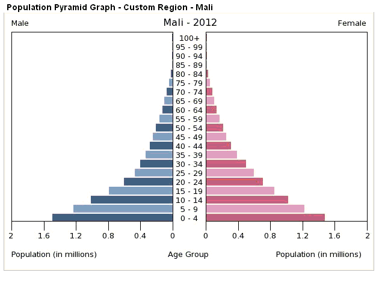

Two sources:

The graph shows the pressure on resources to deal with increasing population and finding educations and jobs for youth, on conversely problems with an aging population and the need for care for the elderly.
This is for the entire country, and in many cases there are significant differences from one part of the country to another.
Things that show up here:
Last revision 2/12/2021